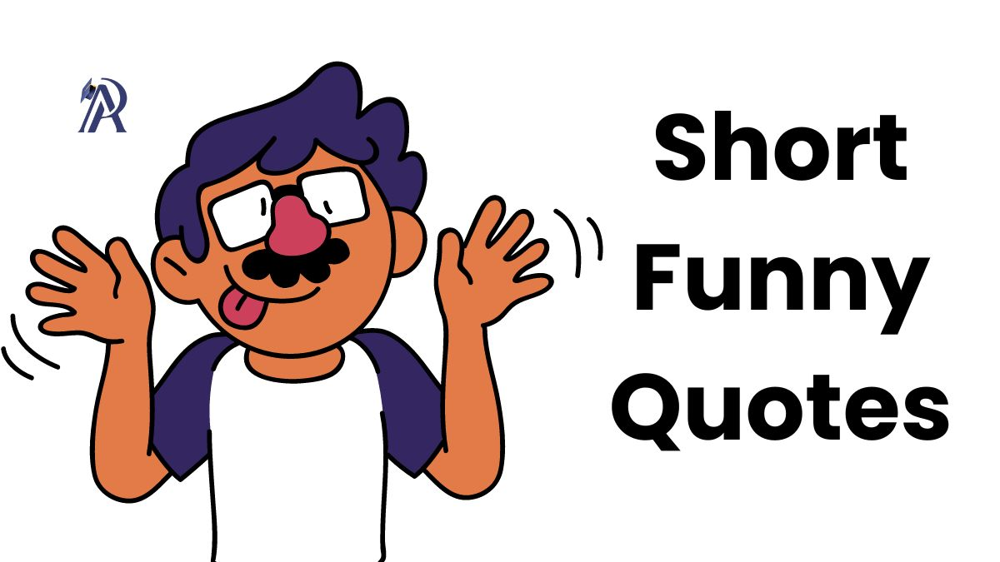

QUOTES
“The way is not in the sky; the way is in the heart.” -Buddha
“Hope is praying for rain, but faith is bringing an umbrella.”
“Nothing binds you except your thoughts; nothing limits you except your fear; and nothing controls you except your beliefs.”- Marianne Williamson
"The world is full of magic things, patiently waiting for our senses to grow sharper." -W.B. Yeats
"The privilege of a lifetime is to become who you really are." - Carl Jung
“We are not human beings having a spiritual experience. We are spiritual beings having a human experience.” -Pierre Teilhard de Chardin
